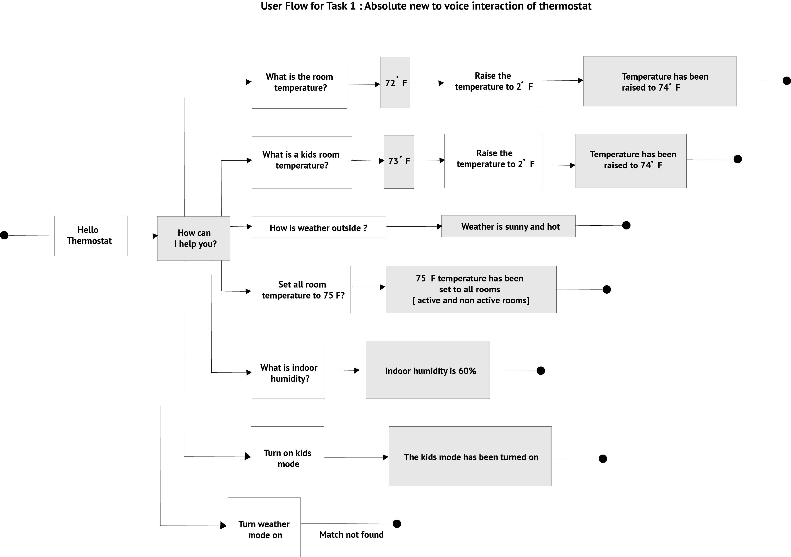

Overview
Thermostat company would like to completely rework the voice UI for their Wi-Fi smart thermostat with voice control.
Design plan:
Find User goals and business goals, User Personas, User research, User scenarios, sketching, paper prototype, testing paper prototype, wireframes and visual representation of the app. high fidelity prototype.

To determine the business requirements on existing products, we have started to work on gathering information about the business requirements as well as user requirements on our existing product to know about how the user is interacting with our existing product and what are the problems they are facing while they are using.
First we noted down the business constraints on existing products : The functionality of the existing thermostat is limited. Some interactions are very slow and hard while operating the thermostat. Very few users are using the voice controlled thermostat. We noted down the user constraints on existing products : Voice commands are limited to the use for the product. The UI of the app is less effective while using the app. New users don’t know how to use the app using the voice commands. After knowing about the business constraints and user constraints, We analyzed it and noted down the user and business goals.
Business Goals : Create an app that has rich voice commands, increase the number of new users to use voice controlled app, functionality of the app needs to be more effective and intuitive while using.
User Goals : Create a better UI for the App, More people can control the app using the voice commands, Increase the functionally of the app.
Design Request:
Determined and analyzed on the existing product we come up with a design challenge to articulate our business as well as user constraints and goals.
Determine ways to improve the onboarding of users to voice control and enable/improve new features with voice control.
We have created important points on design challenges which we are going to solve.
PROCESS
User Research:
Solving our design problem started with a user research process. We have started to prepare questionnaires and conducted one on one interview with target group users. Interactions with different users gave numerous insights on the problems they face while using the app, how they are frustrated with the limited functions on the app, How they feel when they don’t know how to interact with voice commands while using the app.
Interviews were conducted for each user with a notion to identify the user pain points and create a solution for the ease, difficulties faced while using the existing product.
I also engaged as a moderator during the interview process recording the behaviours and approach of the audience who were participating in the user interview.
Responses were collected and analyzed to understand the user interested and come up with feasible solutions for the target users. View User Interview report

Key insights observed from user research process:
Creating Personas:
By Gathering data from the user research process, we created three different category peoples personas like absolute new voice user interface, little bit familiar on usage of voice user interface, frequent usage of voice user interface app. Creating personas helps us to understand our use’s needs, experiences,pain points, behaviours and goals on the product and also helps us to recognize that different people have different needs and expectations.


Creating Scenarios:
To demonstrate and develop ideas on our different category user personas we have come up with the user scenarios. Creating a user scenarios helps me to understand the users detailed description of what users do with product, and more importantly, why they do it. who is the user? what to accomplish? How they will achieve their goals. why will they user our product. I have come up with the three different category scenarios based on three different category personas that helps me to approach for the next level.
Scenario 1:
Meena is a homemaker. She always wants to take care of her family. She is always busy at home with family. She has a thermostat that she can operate manually or she can operate it using the mobile app. She is very new to voice interaction of the device. She don’t know how to operate the device with voice controls. She would like to know and try a new device which is working on voice controlled devices. She is a very enthusiastic woman to learn new things about technology. While she is working in the kitchen or cooking, she used to go to the thermostat and change it manually every time or She has to change it using the mobile app. Since she would like to know more about the details that she can learn and operate a voice controlled device. She finally found the voice controlled home thermostat that she can happily operate using voice commands.
Scenario 2:
Jackson is very enthusiastic in traveling new places and adventure new things. He always spends his holidays with his family in different places outside his home. He always worried about his home. In his home he doesn’t have a smart thermostat that saves his energy, money and his time. He always spends weekends outside the home, that time the thermostat either hot or cold. He is so disappointed with his old thermostat. Then he started to explore a thermostat that he can control using the voice commands as well as remotely. Then he found the home thermostat with a voice controlled device with more adopted holiday options. Jackson is happy to use a voice controlled device that allows him to create a holiday mode scheduling with time, date, day, automated heat on and off button that can save Jacksons time and money.
Scenario 3:
Ammy is a working woman. She is a very busy mother with two kids. She always used to take care about work, family. She would like to have a thermostat that saves her energy, time and money. She is always looking for the thermostat so she can set up different modes remotely with voice controlled devices so that she can easily operate the device in her busy time. Also she is looking for the kids mode for kids that the kids can not change the thermostat. Since, she has started to explore the thermostat that she found a voice controlled thermostat. Finally she found the home thermostat that comes with a voice controlled device. Giving up on voice commands to the device allows her to schedule various options like time, humidity, active room, temperature, fan and she can save this scheduling with her favorite name like “home”. Also she can add more scheduling modes or she can choose any existing mode in the thermostat using the voice commands. Once done with her scheduling she can lock the device that kids can not make any changes to the device.
Sketching of the app :
Storyboard : We have designed a storyboard to represent the visual aspect of scene by scene on our key scenarios. The storyboard helps us to reveal whether our concept is working or not and clearly conveys how the story will flow as the scenes are worked together. Also it allows us to see potential problems that would not go unnoticed, ultimately save our time. Storyboard helps us to focus on the user rather than the solution.


User Flow (Dialog Flow) :
Gathering ideas from the storyboard, I drafted the user flow(Dialog flow) that the user would attempt to achieve their goals. For the voice user interface applications the app needs to work on two different interactions together. Since we created a dialog flow which helps us to design and integrate a conversational user interface into mobile apps. We created three various dialog flows for three different kinds of target users.

Paper Prototype :
We have developed a low fidelity prototype to put our ideas into a realistic app from the user flow. We conducted multiple walkthroughs on the app that helps to better understand how our paper prototype works and complete the task successfully. Low fidelity prototype helps us in the process of multiple iterations and know user problems while the user interacts with the app.
Test the low fidelity prototype with the user and I have found the things that help me to create an app and take me to the next level in the design process.

The important things that I found while conducting user test on the paper prototype? And Approach with the new solution on paper prototype problems:
Wireframes and visual design of the app:
I have created the wireframes of the app, which helps me to create an effective and better way in creation of the UI. I have created the iconography for the app using the Adobe Illustrator. Also focus on the color palette and typography for the app which gives the beautiful look for the app. I have come up with multiple versions of visual representation of the app and finally finalized the best version of the app screen. Creation of visual representation of the app took huge effort in color combination as well as hierarchy of the elements and type for the app, since users love when using the app.

Focus on the visual representation of the app. I have created the mood-board for the app that also gives the look and feel of the app. Also hierarchy of the different elements in each screen as well as the entire app. I have created the app using the adobe illustrator and Adobe XD these tools help me to create the app with nice iconography with voice command options for the app.
User test with in person:
I have conducted in person user test. Found some insights from my existing prototype Since, I have created a prototype as per obtained feedback.
Key insights found from final prototype :
High fidelity Prototype:
I have created all the high fidelity prototype using the adobe XD, this tool can provide prototype with voice controlled commands that easy to create both voice and user interface prototype working together. I have recorded this prototypes according to working functions on three task user flows.
1. Absolute new user for the Voice controlled devices:
In this task I have included the basic functions of operating the thermostat. In this task users perform to increase the temperature of the thermostat, checking the weather of the outside, set up for fan mode on and off, checking the status of the priority room and can move from active room to non active room.
I have created a video prototype on each particular task. Here is the youtube link on the absolute user performing four tasks.
2. Scheduling the new mode:
In this task users can schedule a new mode or can select the existing mode from the thermostat panel. In this Scheduling mode user can give title to new mode as well as user can set up default mode for the temperature and fan. Users can select the choice of date and day and night mode. Here is the youtube video, how the user performing the new scheduling mode in thermostat.
Scheduling new mode
Scheduling holiday mode
3. Scheduling the holiday mode:
In this mode users can schedule holiday mode and users can set up default settings for the holiday mode. Here is the youtube video, how the user performing to scheduling the holiday mode in thermostat.
Outcomes from VUI:
I have learned from creating the app that interactions between the voice commands and the user interface are the most important things to work together.
I have spent much time on the research on the project for every time like how the voice commands work collaboratively. When the user gave the voice commands to the device then the user felt itself giving instructions to the person rather than a device.
I have created an iconography using the illustrator. Also I have created the remaining app using the Adobe XD. A homepage for the app that takes me more effort to organize the elements on the page and the panel looks beautiful so that users can love the app when using it.
User testing of the app performed by the user well and i have noticed a couple of feedback on the app. This is the best way that I have understood about the app working at the same time with two interactions well and I can find problems easily in the app.